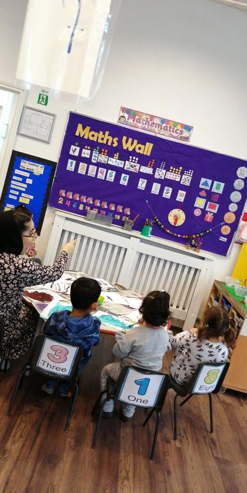

At Lemon Tree Preschool, many parents gently ask the same question: “Is play really learning for my child?” It’s a completely natural thought, especially when learning doesn’t look like traditional lessons.
In the UK, however, learning through play is a well-established part of early years education. This approach is reflected in settings like Lemon Tree Preschool, where children are encouraged to explore and grow through meaningful experiences.
This guide explains the meaning of learning through play, how children develop through it, and what you can realistically expect as your child grows.
What Is Learning Through Play?
Understanding the Concept in Early Childhood Education
Simply put, play-based learning means children learn by exploring, experimenting, and interacting with their surroundings. Instead of formal teaching, they build knowledge through activities like role play, storytelling, and hands-on experiences.
This approach is clearly outlined in the EYFS-based curriculum, which supports children’s development across key learning areas. It ensures that early years learning through play UK is structured, safe, and meaningful.
Why Play Is More Than Just Fun
Play may look simple, but it carries purpose. When children repeat actions or test ideas, they build understanding. Many parents begin to notice this when they explore real nursery environments through the nursery gallery, where learning is visible in everyday activities.
Why Learning Through Play Matters for Child Development
Cognitive and Language Development
One of the key benefits of learning through play is how naturally it supports thinking and communication. Through storytelling, interaction, and guided activities, children develop language skills that form the basis for reading and writing later.
Social and Emotional Growth
Through shared play, children learn cooperation, empathy, and confidence. These skills are often observed during daily routines such as group activities, which are explained in the daily preschool routine.
Physical Skills and Coordination
Activities like climbing, drawing, and outdoor play help children develop coordination and strength.
The Science Behind Play-Based Learning for Children
How the Brain Develops Through Play
Early childhood is a crucial time for brain development. Repeated play experiences strengthen connections in the brain, helping children learn more effectively over time.
This is why the EYFS play-based learning approach focuses on exploration and repetition, as seen in structured nursery programmes like those described on the About Us page.
The Role of Curiosity and Exploration
Children are naturally curious. A supportive environment allows them to explore safely, make mistakes, and try again. This approach is reflected in real nursery settings, including the environment described in Why Parents Choose Lemon Tree Preschool.
Types of Play That Support Learning
Free Play vs Structured Play
Understanding structured vs free play in early years helps reassure parents. Both are important and are balanced within the play-based curriculum structure.
Imaginative and Role Play: The importance of imaginative play in children is seen when they act out real-life situations.
Sensory and Physical Play: Sensory play helps children explore textures, movement, and the environment.
Social Play with Peers: Playing with others builds communication and teamwork.
How Children Learn Through Play in Everyday Activities
What This Looks Like in Nursery Settings
In learning through play in nursery settings, activities are carefully planned and guided. At Lemon Tree Preschool, practitioners observe children and adapt learning accordingly.
Simple Play-Based Learning Ideas at Home
Parents often ask how to support learning through play at home. Simple ideas include:
- Reading and storytelling
- Building with everyday items
- Outdoor exploration
Play-Based Learning vs Traditional Learning Methods
Key Differences Parents Should Know
A play-based curriculum for preschool focuses on exploration rather than instruction. This approach helps children stay engaged and learn naturally.
Which Approach Supports Long-Term Development?
Play-based learning supports broader development, including social and emotional skills. This is why many parents researching and choosing the right preschool in Manchester consider this approach important.
How Educators Support Learning Through Play
The Role of Teachers in Guided Play
Parents often ask, “How do nurseries teach through play?” Educators guide learning through observation and interaction.
How Progress Is Observed and Shared with Parents
Under the EYFS, children’s progress is monitored across different areas. Parents can also explore feedback and communication through the parent feedback section.
Creating a Safe and Stimulating Environment
Safety is a key priority. Measures such as controlled access and trained staff are outlined in the health and safety information.
Signs Your Child Is Learning Through Play
What Progress Looks Like in Real Life
Parents often look for signs that my child is learning through play. These may include:
- Using new words
- Asking questions
- Showing independence
When to Ask Questions or Seek Reassurance
Open communication is important. Parents are encouraged to reach out through the contact page for any concerns or questions.
How Parents Can Support Play-Based Learning at Home
Creating a Play-Friendly Environment: Parents exploring how to encourage learning through play at home in the UK can begin with simple materials and time for free play.
Encouraging Curiosity Without Over-Directing: Allowing children to explore independently supports confidence and learning.
Working in Partnership with Your Preschool: Consistency between home and nursery supports development. Parents can begin this journey through the child registration page.
Conclusion: Why Learning Through Play Is Real Learning
Learning through play is not a lesser form of education. It is a structured, evidence-based approach widely used in UK early years settings.
At Lemon Tree Preschool, this approach reflects a wider understanding of how children grow and learn. Through exploration, interaction, and guided support, children develop skills that stay with them far beyond their early years.
FAQs About Learning Through Play
Is play-based learning approved in the UK?
Yes, play-based learning is supported by the EYFS framework used across UK nurseries. It is recognised as an effective way to support early development in a structured and meaningful way.
Will my child be prepared for primary school?
Yes, children develop important skills such as communication, confidence, and problem-solving. These abilities help them transition smoothly into a more structured school environment.
What does a typical day look like in a play-based nursery?
A typical day includes a mix of free play, guided activities, outdoor learning, and group interaction. Each activity is designed to support different areas of development in a balanced way.
How do I choose the right preschool?
Parents should consider factors such as safety, teaching approach, staff qualifications, and environment. Visiting the setting and asking questions can also help you make a confident and informed decision.